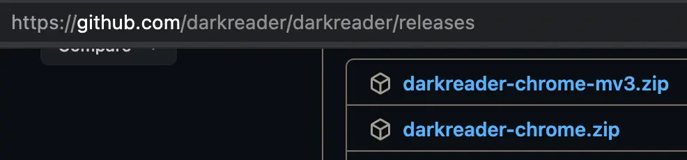

更多
STMP发邮件
sequenceDiagram
actor c as 邮件客户端
actor s as smtp服
actor o as 目标邮件服
actor u as 邮件接收者
c->>s: 登陆发邮件
s-->>c: 错误或者垃级邮件就退回
s->>o: 成功中转发邮件
o-->>s: 错误或者垃级邮件就退回
o->>u: 成功放入用户邮箱
NewSQL
flowchart LR
SQL(SQL例如MySQL) --> NoSQL(NoSQL例如MongoDB)
NoSQL --> newSQL(NewSQL例如CockroachDB,TiDB)
简述
- newSQL 就是在传统关系型数据库上集成了 noSQL 强大的可扩展性
- newSQL 生于云时代，天生就是分布式架构
- CockroachDB
- TiDB
好用的搜索
chromium安装darkreader
-
github下载

-
chromium安装
写好博客/wiki有用参考
- 官方文档/教程
- github优秀项目的readme
- 搜索 Stackoverflow 「关于某个 Wiki 话题」，前 10 ~ 20 个问题；
- 阅读 Google 搜索「关于某个 Wiki 话题」，前 10 ~ 100 篇文章；
- 社区优秀的免费和付费书籍（如果有的话）；
- 优秀的出版书籍（如果有的话）
华为手机自定义安装VLC
小度音箱播放本地音乐
-
进入小度APP之后，点击上方配置的小度智能音箱
-
点击进入设备设置。
-
点击进入蓝牙设置。
-
打开音箱蓝牙的开关。
-
再打开手机的蓝牙功能，找到音箱的蓝牙名称。
-
成功连接音箱蓝牙后，打开手机音乐即可在小度音箱中播放
优秀工具
小知识
腾讯 DNS
119.29.29.29
182.254.116.116
阿里DNS
223.5.5.5
223.6.6.6
2400:3200::1
百度DNS
180.76.76.76
114.114.114.114
2400:da00::6666
下一代互联网国家工程中心
240c::6666
240c::6644
#采用ipv6
ping -6 host
#mac
ping6 host
- utm-虚拟机
detian linux可以正常启动
Username: debian
Password: debian
centos-stream9
root
密码同mac的帐户密码
utm一个虚拟机对应一个utm文件,当初次创建可能需要iso,等iso安装完成了，编辑虚拟机属性，删除掉dvd就不会再安装
- android studio-开发ide
- flutter-跨六个平台-为每个平台生成对应的工程目录,从而达到支持多平台目录
- 菜鸟教程-入门必看
- Consul-服务发现和配置
- 优质chrome插件-国内下载离线安装
- fastlane-自动部署工具
- BUG监控-开发者报警
- tesseract-谷歌的ocr开源
- paddle-百度的ocr开源
- PPOCRLabel-百度开源标注系统
- chineseocr_lite-ocr开源
- EasyOCR-ocr开源,基于tesseract
- chineseocr-ocr开源
- cvat-开源标注系统
- VoTT-微软开源标注系统
- labelme-开源标注系统
- labelImg-开源标注系统
- via-开源标注系统
- copilot-AI写代码
- 开源公司介绍-oschina
- Fabric-python自动化运维
- dperf-百度开源压测工具
- traefik-开源的边缘路由器
- tensorflow-谷歌的人工智能开源
- 极验-交互式验证码
- 720-VR全景制作
- upx-免费程序打包压缩神器
- 蓝湖
蓝湖是一款产品文档和设计图的共享平台，帮助互联网团队更好地管理文档和设计图。蓝湖可以在线展示Axure，自动生成设计图标注，与团队共享设计图，展示页面之间的跳转关系
- OCSP-在线证书状态协议 目的：验证SSL证书的有效性，以确保它未被吊销。
- 腾讯开源
- 百度开源
- 阿里开源
- 腾讯-开发者社区
- 百度-开发者社区
- 阿里云-开发者社区
- IBM-开发者社区
- gitlab-开源gitlab
- dodefever-蒲公英托管平台,github开源地址
- gitee-百度投资托管平台
- coding-腾讯投资托管平台
- 工蜂-腾讯托管平台
- 云效-阿里云托管平台
- 企业微信添加机器人,实现接受webhook
- 钉钉添加机器人,实现接受webhook,钉钉开放平台
- Tapd-让协作更敏捷
- 介绍不需要碎片整理
- 文件系统基于区块分配的设计使得磁盘上出现碎片的概率很低，延迟分配和自动的整理策略解放了操作系统的使用者，在多数情况下不需要考虑磁盘的碎片化；
- 固态硬盘的随机读写性能远远好于机械硬盘，随机读写和顺序读写虽然也有性能差异，但是没有机械硬盘的差异巨大，而频繁的碎片整理也会影响固态硬盘的使用寿命；
- 存在ipv0,ipv1,ipv2,ipv3,ipv5协议
- ipv6难取代ipv4,IPv6的回环地址是：0:0:0:0:0:0:0:0或::,ipv4使用32bit/4字节,每组一个字节,4组,ipv6采用128bit/16字节,每组2个字节,8组.
- IPv6 协议在设计时没有考虑与 IPv4 的兼容性问题
- NAT 技术很大程度上缓解了 IPv4 地址短缺的问题
- 更细粒度的管控 IPv4 地址并回收闲置的资源
- 谁有能力强制推行大家支持?国家虽有文件要求,但设备厂商、运营商、互联网服务提供商、软件开发者、用户这整个链路中，所有的人都把IPv4当必选方案，IPv6当可选方案。所有的人都有非常一致的思维：既然IPv4 100%能访问，IPv6不确定因素那么多，那我就直接全部用IPv4多好多省事。
- 这里测试ipv6
- tcp粘包因为是传输字节流,解决办法是协议自定义消息边界
- 消息长度固定
- 消息中有包括长度的字段
- 采用特定字符串作为消息边界
- Google perftools
- 它的主要功能就是通过采样的方式，给程序中cpu的使用情况进行“画像”，通过它所输出的结果，我们可以对程序中各个函数（得到函数之间的调用关系）耗时情况一目了然。
- 在对程序做性能优化的时候，这个是很重要的，先把最耗时的若干个操作优化好，程序的整体性能提升应该十分明显.
- HMM(隐马尔科夫模型)
- webtorrent-直接看p2p
AppImage(Linux apps that run anywhere)
- AppImage 是一个压缩的镜像文件，它包含所有运行所需要的依赖和库文件.你可以直接执行AppImage 文件不需要安装。. 当你把AppImage 文件删除，整个软件也被删除了。. 你可以把它当成windows系统中的那些免安装的exe文件。
jsonl(JSON Lines)
JSON Lines 是一种文本格式，适用于存储大量结构相似的嵌套数据、在协程之间传递信息等。
它有如下特点：
每一行都是完整、合法的 JSON 值；采用 \n 或 \r\n 作为行分隔符；
采用 UTF-8 编码；
使用 jsonl 作为文件扩展名；建议使用 gzip 或 bzip2 压缩并生成 .jsonl.gz 或 .jsonl.bz2 文件，以便节省空间。